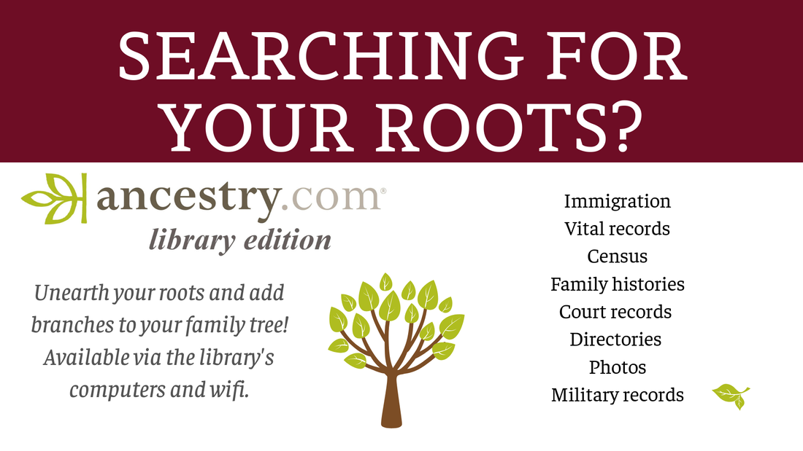

Research and Learn
You'll find more about special collections at each library branch here.
Searching for your roots? Use ancestry.com, library edition to unearth your roots and add branches to your family tree! Available via the library's computers and wifi. You can find information about immigration, vital records, census, family histories, court records, directories, photos, military records, and more!